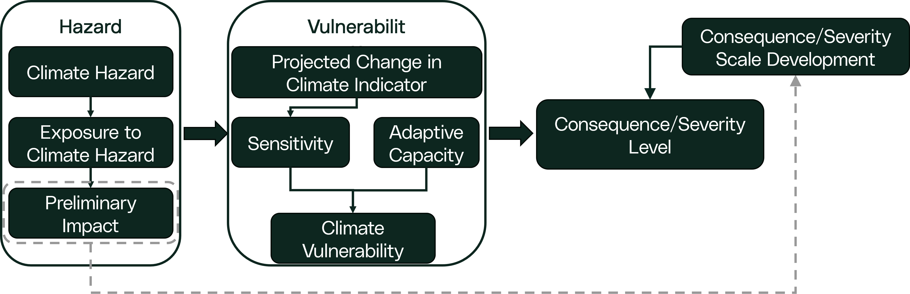
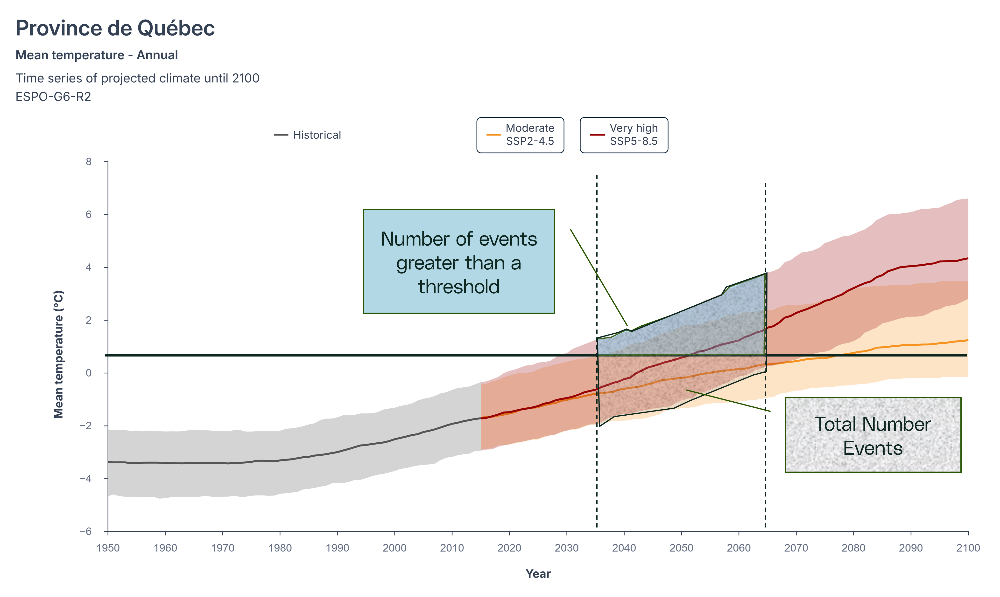
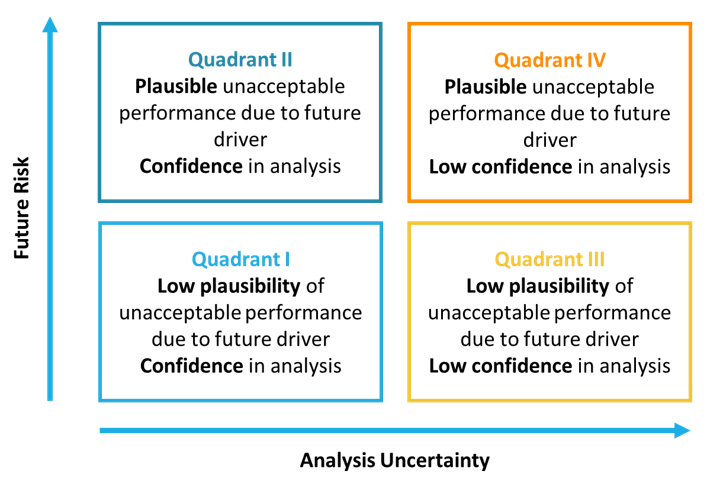
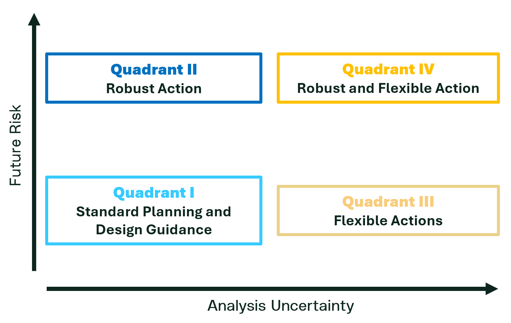

---
config:
flowchart:
curve: linear
---
flowchart-elk TD
A[Step 1: Develop Scope]:::basic --> B[Step 2: Understand System]:::basic
B --> C[Step 3: Hazard & Exposure Assessment]:::basic
C --> D[Step 4: Vulnerability Assessment]:::basic
H[Step 7: Institutionalize Decision]:::basic
D --> |No Vulnerability| H
D --> |Vulnerable| E[Step 5: Risk Assessment]:::focus
F[Step 6: Adaptation Plan]:::basic
E --- J1
D --- J1(( )):::join
J1 --> |Unacceptable Vulnerability or Risk| F
E --> |Risk Acceptable| H
F --> H
classDef basic fill:#CAD4D6
classDef focus fill:#CAD4D6, stroke:#CE153D, color:#CE153D
classDef join height:0px
Step 5: Climate Risk Assessment
This step may be completed which estimates climate risk for each relevant climate interaction with the system by combining: the climate hazard (what could occur), exposure (what parts of the system are in direct/indirect contact with the hazard), and vulnerability (how the system responds, based on sensitivity and existing capacity to cope). Risk can be described using the IPCC framing and formula:
\[ R = f(H,E,V) \]
where Risk (\(R\)); Hazard (\(H\)); Exposure (\(E\)); and Vulnerability (\(V\)).
This risk concept is beneficial for understanding how different key factors influence the overall risk of an system and how modification of one of these factors can reduce the overall risk. See Core Concepts: Understanding Adaptation for more details. It can also be directly mapped to the traditional definition of risk:
\[ R = L × C \] where Risk (\(R\)); Likelihood (\(L\)); and Consequence (\(C\)),
In this framing, likelihood is driven by the hazard (for selected scenarios, time horizons, and indicator values), while consequence is driven by the exposure and vulnerability (how the system performs if the event occurs). The relationship between the IPCC concept of risk and traditional risk definitions are discussed in Core Concepts: Understanding Adaptation. The relationship between likelihood and consequence to estimate risk is typically visually represented with a risk matrix or heat map and can vary depending on the type of risk assessment that is completed.
NoteThe Challenge of Uncertainty
Climate risk assessment is often challenging because both likelihood and consequence are uncertain, and uncertainty generally increases further into the future. For that reason, risk may be better represented as a range of results across scenarios and time horizons rather than a single value, and it may be impractical to represent climate risk as a single point on a traditional probability-consequence matrix. The objective of the assessment should be to evaluate multiple climate scenarios to understand a range of possible risks for any given climate interaction with an system. Accurately assessing climate risk may require a nuanced understanding of the climate data and specialized climate science expertise to complement engineering teams.
This step supports forward-looking decisions by documenting how likelihood and consequence are estimated, showing how results change across scenarios, and clearly describing confidence and uncertainty so decision-makers can understand what is known, what is uncertain, and what could change the outcome.
Assess Consequence
This sub-step estimates consequence (severity) for each relevant climate interaction using the exposure and vulnerability results. Consequence describes what would happen if the climate condition occurred; it does not consider probability.
The consequence is the result of a risk event being realized and should be directly derived from the vulnerability.

If preliminary impacts were developed as part of the exposure assessment, they should be reviewed as part of this step and considered in the consequence/severity scale. For each climate interaction, a consequence/severity level(s) should be determined, and applicable impacts (financial, environmental, reputational, etc.) associated with the consequence should be documented. Consequence scores will then be carried forward and combined with the likelihood of the interaction to estimate risk.
Assess Likelihood
This sub-step estimates the likelihood that a climate indicator will reach levels that matter for system performance, within the selected scenario(s) and time horizon(s). Likelihood methods depend on the type and quality of climate data available. Where modelled projections are available for the indicator, likelihood may be estimated quantitatively.
Select Climate Scenarios: Before quantifying risk, determine which climate scenarios to analyze. This includes deciding how to represent time (e.g., based on the design life of the system) and which climate scenarios to use (e.g., different emissions pathways or global warming levels). For long-lived assets, multiple scenarios may be needed; for shorter-lived assets, a single scenario may suffice. Rationale for choices should be clearly documented.
NoteNote on time
The more climate scenarios and time horizons needed for the assessment, the more likelihood values will need to be calculated for each climate indicator. For example, if SSP2-4.5 and SSP5-8.5 climate scenarios are selected for the 2°C global warming level, under two future time horizons (2050s and 2080s time periods), then four distinct likelihood values will need to be calculated and compared in the analysis. The time window selected should include 30 years to capture climate variability, but does not need to exceed system design life beyond that.
Select the Future Value or Range Criteria: For each scenario, determine the historic and future value or range in which likelihood will be calculated. That is, the future value or range of possibilities within the climate scenario ensembles in which statistical analysis will be calculated against. Percentiles could also be used to add some conservatism, at the cost of sample size. For example, the number of 75th percentile or greater events that exceed the critical threshold could be compared to the total number of events that exceed the 75th percentile of the climate projection data.
Assess Probability: For each scenario, determine the probability of relevant hazards and indicators. This is completed through statistical analysis to calculate the probability of the future value or range exceeding the selected threshold (performance criteria) established previously. For simple risk assessments, the probability should be calculated following the classical formula, or other established statistical methods, for determine the probability of event \(X\) occurring:
\[ L(X) = \frac{\text{Number of times X occurs}}{\text{Total Number of Events}} \]
This formula is applied with respect to a pre-defined threshold. In the simple climate risk analysis scenario, where a critical threshold has been identified, this should be the number of times the climate data in a 30+ year window exceeds the critical threshold divided by the total number of data points. For complex risk assessments, this probability calculation may vary.

NoteStationarity Assumptions
The classic probability formula assumes data are stationary, which means there is no long-term trend. This assumption is false, but may be useful. Climate data should be compared in 30-40 year windows where stationarity assumptions are more valid and not used for long periods of time. Alternatively, probabilities may be estimated from fitted probability distributions, some of which may be applied to non-stationary data. For screening and other high-level assessments, the probability may be able to be reasonable estimated visually.
Mapping Probability: Once the probabilities of a climate indicator exceeding the performance criteria is calculated, map each of the scenario probabilities to a likelihood scale or criteria. This is done so that risk can be estimated by combining the likelihood level with the consequence level. This will result in a likelihood value for each scenario and time horizon evaluated for a given climate indicator.
Risk Quantification
The final risk (risk level) is determined quantitatively as the product of the likelihood and the consequence (impact) or may be qualitatively evaluated using likelihood and consequence results. This is commonly mapped to a risk matrix. Risks should be calculated for each climate interaction, scenario, and time horizon that have been included in the assessment. This may result in multiple risk values for a given interaction, if multiple climate scenarios and time horizons are considered in the assessment.
When risk, likelihood and consequence are determined semi-quantitatively, care should be taken to ensure the resulting analysis is meaningful. Often categorical values have a tendency to select middle values and are selected very subjectively. In these situations, ensure values are non-biased, founded on information and granular enough to suit the needs of the assessment.
Level of Concern
Recognizing uncertainty and understanding the confidence in the analysis is an important part of a climate risk assessment. There is natural variability in the climate system and human actions will determine the emissions pathway altering climate outcomes in the future. In addition, not all climate model parameters or vulnerability and risk assessment methods offer the same degree of confidence. As a result, it is important to integrate both the level of risk, the uncertainty and confidence in the analysis when finalizing the assessment. Identifying the level of concern allows for the consideration of both risk and uncertainty.
Key Steps for Determining Level of Concern
Risk: Using the risk from the risk assessment to plot the position on the vertical axis of a Level of Concern diagram for each climate interaction assessed. The vertical axis represents the amount of risk, as determined by the risk assessment.
TipSimplification
Where multiple climate risks exist for a single climate interaction (e.g., multiple climate scenarios and time horizons assessed), it is often best practice to select one conservative future risk level, to simplify the analysis depending on the objective of the assessment. The analytical uncertainty will guard against overly conservative and costly adaptation actions. The future risk level mapped for the climate interaction should be documented and justified to fit the purpose of the assessment.
Analytical Uncertainty: Assign the analytical uncertainty on the horizontal axis. This value reflects the uncertainty in climate projections, the confidence in the ability of climate models to represent relevant hazards, and the confidence in the vulnerability assessment process. This step is inherently subjective unless there is detailed knowledge of the uncertainties involved. Information on uncertainty and confidence can be found here
Involve climate science and engineering experts to help assess uncertainty and avoid bias – whether it be overconfidence or under confidence in the data and models.
By combining risk magnitude with analytical uncertainty, it is possible to identify the overall level of concern for each risk. This approach will help prioritize adaptation actions and ensure decision-makers understand both the risks and the confidence in the underlying analysis.

Adaptation Strategy Quadrants
Building on the level of concern diagram, adaptation strategies for associated climate risks can be categorized based on the risk level and the confidence in the analysis can be identified. A four-quadrant approach is presented, and are aimed to support adaptation strategy development in the next step of this assessment process. Adaptation quadrant descriptions include:

Following this structured approach ensures that adaptation strategies are well-matched to both the level of risk and the confidence in the analysis, supporting resilient and cost-effective decision-making.
Risk Prioritization
If the risk assessment is being done for a larger facility or multiple system, an additional step may be required to prioritize the risks that will be treated. The risk and the level of concern can be used to prioritize risks to be addressed. Adaptations plans for each risk can then be institutionalized or an organizational risk tolerance threshold can be applied to determine which risks needs to be addressed and in which order.